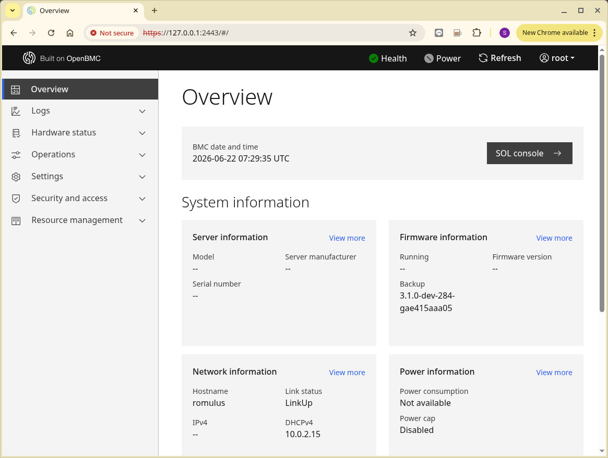

Steward
分享是一種喜悅、更是一種幸福
系統 - OpenBMC - 如何使用QEMU跑OpenBMC
參考資訊：
https://hackmd.io/@a0979552111/BykOU2CDJg
https://jia.je/system/2023/08/11/openbmc-qemu/#%E8%BF%87%E7%A8%8B
https://jenkins.openbmc.org/job/latest-master/lastSuccessfulBuild/label=docker-builder,target=romulus/artifact/openbmc/build/tmp/deploy/images/romulus/
安裝步驟：
$ cd
$ wget https://github.com/steward-fu/website/releases/download/openbmc/obmc-phosphor-image-romulus.static.mtd
$ wget https://github.com/steward-fu/website/releases/download/openbmc/qemu-system-arm
$ chmod a+x qemu-system-arm
$ ./qemu-system-arm \
-m 512 \
-M romulus-bmc \
-nographic \
-drive file=obmc-phosphor-image-romulus.static.mtd,format=raw,if=mtd \
-net nic \
-net user,hostfwd=tcp::2222-:22,hostfwd=tcp::2443-:443,hostfwd=udp::2623-:623
Phosphor OpenBMC (Phosphor OpenBMC Project Reference Distro) nodistro.0 romulus ttyS4
romulus login:
P.S. root/0penBmc，Ctrl+A=>X可以結束QEMU執行
bmcweb

redfish
$ curl -k https://127.0.0.1:2443/redfish/v1/
{
"@odata.id": "/redfish/v1",
"@odata.type": "#ServiceRoot.v1_15_0.ServiceRoot",
"AccountService": {
"@odata.id": "/redfish/v1/AccountService"
},
"Cables": {
"@odata.id": "/redfish/v1/Cables"
},
"CertificateService": {
"@odata.id": "/redfish/v1/CertificateService"
},
"Chassis": {
"@odata.id": "/redfish/v1/Chassis"
},
"EventService": {
"@odata.id": "/redfish/v1/EventService"
},
"Fabrics": {
"@odata.id": "/redfish/v1/Fabrics"
},
"Id": "RootService",
"JsonSchemas": {
"@odata.id": "/redfish/v1/JsonSchemas"
},
"Links": {
"ManagerProvidingService": {
"@odata.id": "/redfish/v1/Managers/bmc"
},
"Sessions": {
"@odata.id": "/redfish/v1/SessionService/Sessions"
}
},
"Managers": {
"@odata.id": "/redfish/v1/Managers"
},
"Name": "Root Service",
"ProtocolFeaturesSupported": {
"DeepOperations": {
"DeepPATCH": false,
"DeepPOST": false
},
"ExcerptQuery": false,
"ExpandQuery": {
"ExpandAll": false,
"Levels": false,
"Links": false,
"NoLinks": false
},
"FilterQuery": false,
"OnlyMemberQuery": true,
"SelectQuery": true
},
"RedfishVersion": "1.17.0",
"Registries": {
"@odata.id": "/redfish/v1/Registries"
},
"SessionService": {
"@odata.id": "/redfish/v1/SessionService"
},
"Systems": {
"@odata.id": "/redfish/v1/Systems"
},
"Tasks": {
"@odata.id": "/redfish/v1/TaskService"
},
"TelemetryService": {
"@odata.id": "/redfish/v1/TelemetryService"
},
"UUID": "4bc37975-be4d-4d72-a57f-1400930a3d3a",
"UpdateService": {
"@odata.id": "/redfish/v1/UpdateService"
}
}
ssh
$ ssh root@localhost -p 2222 root@romulus:~#